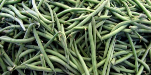
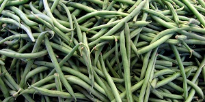

The most common ingredients in Chinese stir-fry cooking
- Rice Noodles are thin, string like and made from rice, flour and water.
- Hoisin Sauce is a thick sauce which usually includes soy beans, fennel seeds, red chilies, and garlic.
- Chinese Cabbage from the Yangtze River Delta is very similar to western cabbage.
- Green Beans are the unripe, young fruit and protective pods of various common bean plants.
- Shiitake Mushrooms are native to East Asia. They are cultivated and consumed in many Asian countries.
- Prawns are crustaceans of varying size with sweet, firm, meaty flesh.
- Oyster Sauce is made by cooking oysters along with sugar, salt and water thickened with corn starch.
- Soy Sauce is an aromatic sauce, originating from Indonesia, which has a dark colour, a thick syrupy consistency and a unique, pronounced, sweet flavor due to lots of palm sugar.
- Spring Onions are often used as a garnish when serving dishes.
- Meat: Chicken, beef and pork are all used in stir-fry recipes.

Stir-fried Steak with Kale
Follow the instructions below:
- Put 3tbsp of soy sauce and oyster sauce in a bowl and mix with 1tbsp of corn flour. Add two rump steaks cut into strips and leave to marinate for around 30 mins.
- Heat oil in a wok until very hot. Add the steak and sauce mix and cook for 3 mins. Remove from the wok and set aside for later.
- Deglaze the wok with 150ml of chicken stock and bring to the boil.
- Add 100g of Kale leaves and cook for 3 mins.
- Return the steak to the wok along with a small handful of chopped spring onions. Cook for a couple of mins.
- Serve with boiled rice and sprinkle with some chopped peanuts.

Tasty Chicken Stir Fry
Follow the instructions below:
- Add some noodles to boiling water for three minutes, stirring gentle to separate the noodles. Drain and put aside.
- While the noodles are cooking heat some oil in a wok and stir fry chicken strips until cooked. Remove from the wok and set aside.
- Stir fry a thumb sized piece of chopped ginger along with some hard veg of your choice (e.g. broccoli, sugar snap peas, green beans) for 2 mins.
- Add the noodles along with leafy veg (e.g. cabbage, pak choi) to the wok and fry until cooked.
- Add the chicken along with 2tbsp of soy sauce and 1tbsp sesame oil. Heat through and serve.